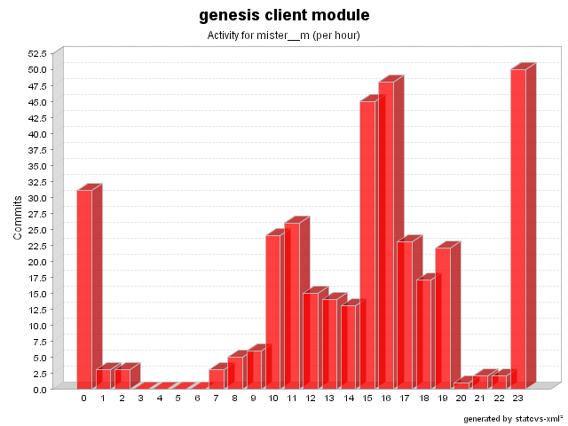

| Login: mister__m Fullname: mister__m Revisions: 353 Lines of Code: 9023 Added Lines of Code: 11217 Lines of Code per Change: 25.6 |

| Date | Author | File/Message |
|---|---|---|
| 6/5/07 5:22 PM | mister__m | requiredif deprecated (issue # 449)
(1 Files changed,
3 Lines changed) src/net/java/dev/genesis/ui/BasicValidator.java 1.9
(+3
-0)
|
| 5/25/07 6:36 PM | mister__m | Updated copyright for 2007
(1 Files changed,
1 Lines changed) test-src/net/java/dev/genesis/ui/swt/lookup/MapWidgetLookupStrategyTest.java 1.6
(+1
-1)
|
| 5/25/07 6:33 PM | mister__m | Increased coverage for lookup tests
(8 Files changed,
85 Lines changed) test-src/net/java/dev/genesis/ui/swt/lookup/RecursiveWidgetLookupStrategyTest.java 1.4
(+10
-1)
test-src/net/java/dev/genesis/ui/swing/lookup/MockRecursiveComponentLookupStrategy.java 1.4
(+1
-6)
src/net/java/dev/genesis/ui/binding/RecursiveLookupStrategy.java 1.3
(+2
-2)
test-src/net/java/dev/genesis/ui/swing/lookup/MapComponentLookupStrategyTest.java 1.3
(+5
-6)
test-src/net/java/dev/genesis/ui/swing/lookup/BreadthFirstComponentLookupStrategyTest.java 1.2
(+29
-5)
test-src/net/java/dev/genesis/ui/swing/lookup/DepthFirstComponentLookupStrategyTest.java 1.2
(+23
-2)
test-src/net/java/dev/genesis/ui/swt/lookup/MapWidgetLookupStrategyTest.java 1.5
(+4
-5)
test-src/net/java/dev/genesis/ui/swing/lookup/RecursiveComponentLookupStrategyTest.java 1.4
(+11
-1)
|
| 5/25/07 3:51 PM | mister__m | Increased coverage for StartupHelperTest and updated copyright years
(3 Files changed,
53 Lines changed) test-src/net/java/dev/genesis/helpers/StartupHelperTest.java 1.3
(+33
-1)
test-src/net/java/dev/genesis/mockobjects/MockScriptFactory.java 1.2
(+18
-0)
test-src/net/java/dev/genesis/helpers/CriteriaPropertyHelperTest.java 1.4
(+2
-1)
|
| 5/25/07 10:47 AM | mister__m | Increased coverage for CriteriaPropertyHelperTest
(2 Files changed,
124 Lines changed) test-src/net/java/dev/genesis/helpers/CriteriaPropertyHelperTest.java 1.3
(+70
-0)
test-src/net/java/dev/genesis/mockobjects/MockScriptFactory.java 1.1 added 54 |
| 3/21/07 12:46 PM | mister__m | BaseThinlet.AS_YOU_TYPE constant added
(3 Files changed,
11 Lines changed) src/net/java/dev/genesis/ui/thinlet/ThinletBinder.java 1.55
(+1
-1)
test-src/net/java/dev/genesis/ui/thinlet/ThinletBinderTest.java 1.12
(+9
-6)
src/net/java/dev/genesis/ui/thinlet/BaseThinlet.java 1.45
(+1
-0)
|
| 3/21/07 10:51 AM | mister__m | Ways to define a default binding strategy per binder and global one added (issue # 396)
(6 Files changed,
129 Lines changed) test-src/net/java/dev/genesis/ui/thinlet/ThinletBinderTest.java 1.11
(+25
-0)
src/net/java/dev/genesis/ui/thinlet/ThinletBinder.java 1.54
(+35
-2)
src/net/java/dev/genesis/ui/swing/components/JTextComponentBinder.java 1.6
(+2
-2)
src/net/java/dev/genesis/ui/binding/AbstractBinder.java 1.12
(+31
-0)
test-src/net/java/dev/genesis/ui/binding/AbstractBinderTest.java 1.3
(+34
-2)
src/net/java/dev/genesis/ui/swt/widgets/TextWidgetBinder.java 1.6
(+2
-2)
|
| 3/13/07 10:28 AM | mister__m | Initial support for binding strategy (issue # 396)
(8 Files changed,
387 Lines changed) src/net/java/dev/genesis/ui/swt/widgets/TextWidgetBinder.java 1.5
(+102
-22)
test-src/net/java/dev/genesis/ui/thinlet/ThinletBinderTest.java 1.10
(+33
-1)
src/net/java/dev/genesis/ui/thinlet/ThinletBinder.java 1.53
(+14
-3)
src/net/java/dev/genesis/ui/swing/components/JTextComponentBinder.java 1.5
(+135
-22)
src/net/java/dev/genesis/ui/binding/BindingStrategy.java 1.1 added 27 src/net/java/dev/genesis/ui/binding/AbstractBinder.java 1.11
(+6
-0)
test-src/net/java/dev/genesis/ui/swt/widgets/TextWidgetBinderTest.java 1.2
(+26
-1)
test-src/net/java/dev/genesis/ui/swing/components/JTextComponentBinderTest.java 1.6
(+44
-2)
|
| 2/22/07 9:35 AM | mister__m | An IllegalArgumentException is now thrown (issue # 434)
(1 Files changed,
23 Lines changed) src/net/java/dev/genesis/ui/metadata/annotation/DataProviderAnnotationHandler.java 1.3
(+23
-7)
|
| 2/15/07 8:09 AM | mister__m | Removed unused class
(2 Files changed,
0 Lines changed) test-src/net/java/dev/genesis/helpers/TypeCheckerTest.java 1.3 removed src/net/java/dev/genesis/helpers/TypeChecker.java 1.5 removed |